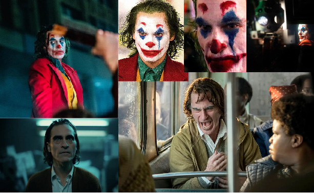
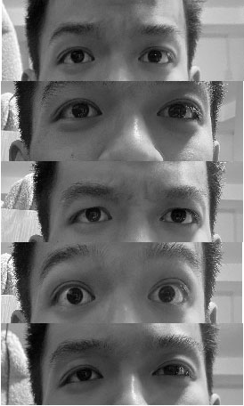
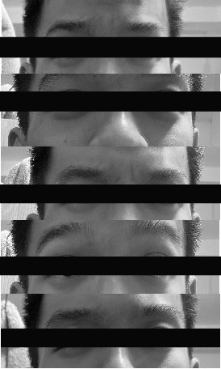
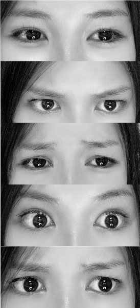
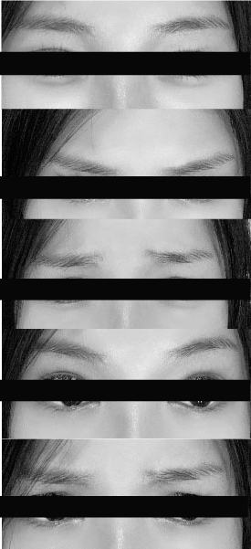
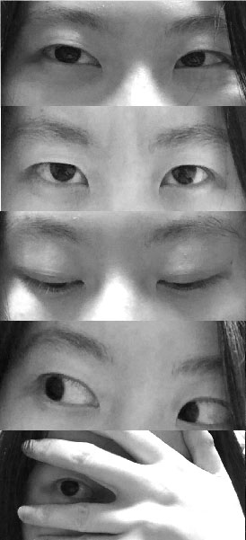
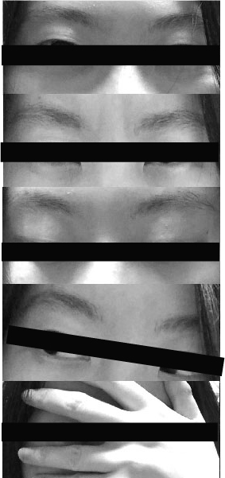

Guiding Questions
Should we looking through the people's hearts by observing their expressions?
what is the meaning of emotion?
Brainstorming
We all know that people's eyes can tell their emotions. When we talk with other people, eye contact will be significant for us to communicate because we want to know other people's thoughts.
For example, for a good actor/actress, we can always read their emotions through their eyes.
However, because they perform for the audience, they are actually trying to hide their emotions behind their acting.

The idea
The question is are we really want other people to read our emotions through our eyes?
If you can see through the other people's minds at all times by simply observing their expressions, that will be so scary.
Everyone wants to have some secret emotions that don't want to seem by other people.
Using eye emotion to identify a person has become a common view in the society that whether or not other people make eye contact with us changes how we think about them and their feelings.
I want to break this concept that everyone has the right to hide their emotions with their eyes.
What's the emotion?Is our tool for observing others, or our own wealth which we can hide from others?





